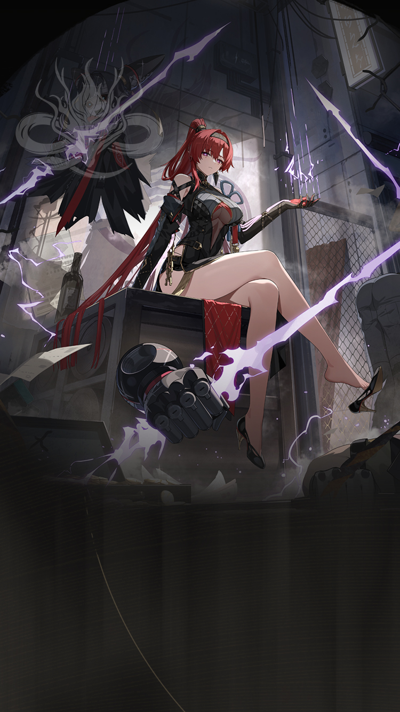

WaveKit
WaveKit

Wuthering Waves Resonator guide
Yinlin build, teams, weapons, and Echoes
Electro off-field pressure and coordinated damage.
ElectroRectifierSub DPS5★ ResonatorGuide checked
Quick build
- Role
- Sub DPS
- Team type
- coordinated
- Best weapon
- Stringmaster
- Alternate weapons
- Cosmic Ripples / Augment / Jinzhou Keeper
- Sonata
- Moonlit Clouds
- Echo cost
- 4-3-3-1-1
- Main Echo
- Impermanence Heron
- Main stats
- CRIT Rate or CRIT DMG / Electro DMG or Energy Regen / ATK%
Stat priority
- CRIT Rate / CRIT DMG balance
- Electro DMG or ATK%
- ATK% or HP% if the kit scales that way
- Energy Regen only if the rotation needs it
Team direction
Yinlin is best handled by matching their role with the teammates you actually own.
WaveKit treats Yinlin as flexible. Use the team helper to match them with your owned roster instead of forcing one fixed team.
Useful teammates
No fixed teammate pool is required. Prioritise role coverage, safe sustain, and matching build needs.
Simple play pattern
- Use Yinlin as a setup piece: apply their buff, effect, or off-field pressure first.
- Swap back to the carry once their useful window is active.
- If their setup feels late, add Energy Regen before chasing more damage.
Build priority
- Difficulty
- Flexible
- Safety
- Bring a healer if learning
- Data note
- Guide checked
Yinlin is most valuable when their buff, element, or mechanic matches the carry you want to build.